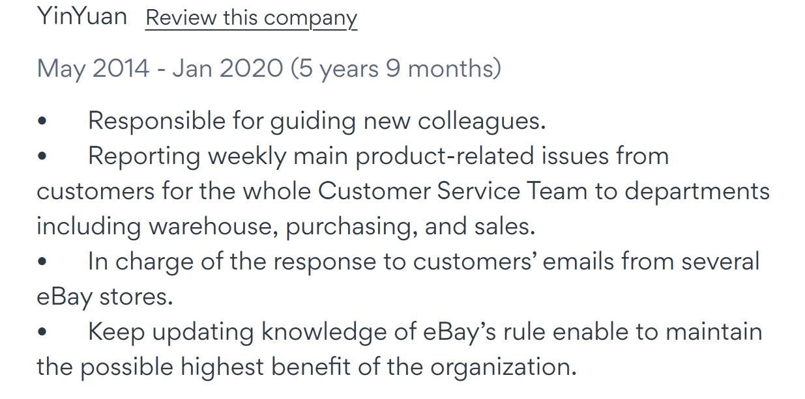

Customer Service Specialist
Quality Insurance


I have 4 years of experience as a quality guarantee professional in a Japanese enterprise, responsible for ensuring product quality and maintaining production targets. With 5 years of customer service support, I have experience assisting customers globally. While working as a customer service specialist, I requested my IT department colleagues to update the software functions, and that's when I discovered the cool and practical aspects of IT skills. I am pursuing a master's degree in IT at the University of Canberra. I enjoy reading, listening to classical music, and taking walks outdoors. Once, I walked 16 kilometres along a river in an afternoon and had a wonderful experience. Thank you